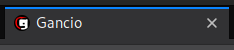

Configuration
Main gancio configuration is done with a configuration file.
This shoud be a .json or a .js file and could be specified using the --config flag.
- eg.
gancio start --config ./config.json - eg.
pm2 start gancio start -- --config ~/config.json
- Title
- Description
- BaseURL
- Server
- Database
- Upload path
- SMTP
- Admin
- Favicon
- User locale
- Secret
- Default settings
-
Title
The title will be in rss feed, in html head and in emails:
"title": "Gancio"

-
Description
"description": "a shared agenda for local communities" -
BaseURL
URL where your site will be accessible (include http or https):
"baseurl": "https://gancio.cisti.org" -
Server
This probably support unix socket too :D
"server": {
"host": "localhost",
"port": 13120
}
-
Database
"db": { "dialect": "sqlite", "storage": "/tmp/db.sqlite" } -
Upload path
Where to save images
"upload_path": "./uploads" -
SMTP
-
Admin
-
Favicon
You could specify another favicon. This is also used as logo (top-left corner):
"favicon": "./favicon.ico" -
User locale
Probably you want to modify some text for your specific community, that’s why we thought the
user_localeconfiguration: you can specify your version of each string of gancio making a directory with your locales inside. For example, let’s say you want to modify the text inside the/aboutpage:
mkdir /opt/gancio/user_localeput something like this in/opt/gancio/user_locale/en.jsto override the about in english:export default { about: 'A new about' }and then point the
user_localeconfiguration to that directory:"user_locale": "/opt/gancio/user_locale"Watch here for a list of strings you can override.
 Note that a restart is needed when you change
user_locale’s content.
Note that a restart is needed when you change
user_locale’s content. -
Secret
Default settings
{
"title": "Gancio",
"description": "A shared agenda for local communities",
"baseurl": "http://localhost:13120",
"server": {
"host": "0.0.0.0",
"port": 13120
},
"db": {
"dialect": "sqlite",
"storage": "/tmp/db.sqlite"
},
"upload_path": "./",
"favicon": "../dist/favicon.ico",
"smtp": {
"auth": {
"user": "",
"pass": ""
},
"secure": true,
"host": ""
},
"admin": "",
"secret": "notsosecret"
}